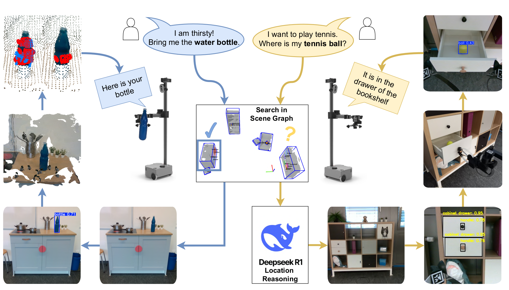

Open-Vocabulary and Semantic-Aware Reasoning for Search and Retrieval of Objects in Dynamic and Concealed Spaces
IROS Workshop on Perception and Planning for Mobile Manipulation (2025) (Best Poster Award)